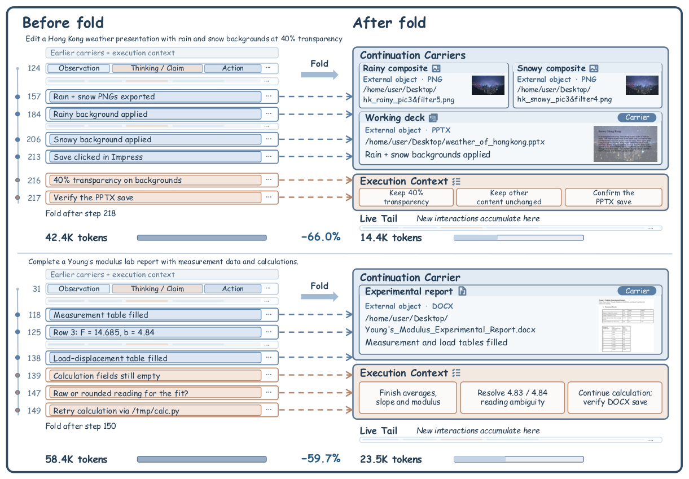
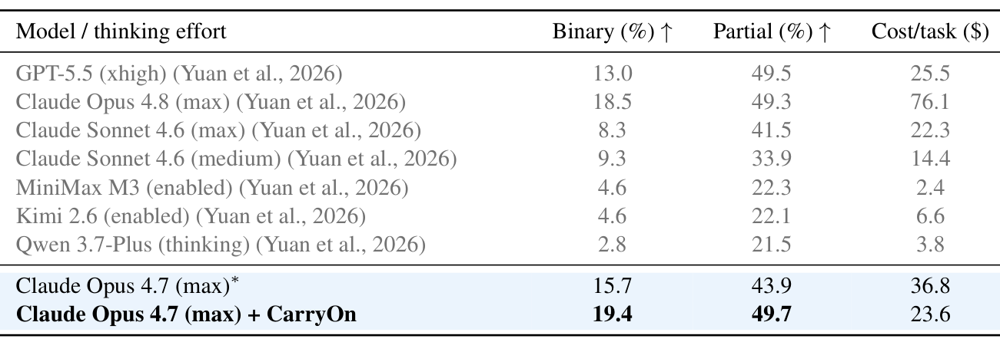
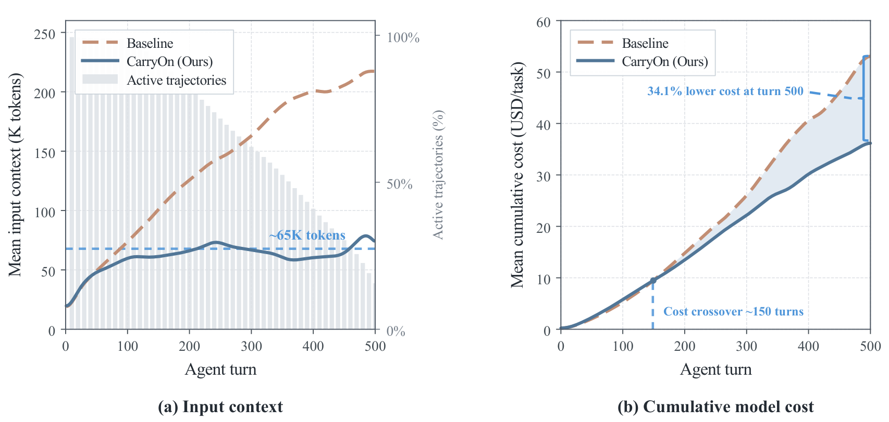

Pack light,
CarryOn.
Keeping AI agents on track in long-horizon tasks
Pack Light, CarryOn: Building Object-Oriented Context for Long-Horizon Agents
1University of California San Diego
*corresponding author
a two-minute overview
1 / 4 · The idea
Let task objects carry the progress.
A long task leaves its progress in the environment, yet the agent keeps re-reading how it got there. CarryOn builds the context around reusable task objects instead, so the agent carries just three things.
1Where the work is
Continuation carriers point to task objects, such as a file or an app state.
2What's left to do
Execution context keeps goals, constraints and open issues.
3Latest steps
The live tail keeps the steps since the last fold.

Folding with task objects on OSWorld 2.0. The presentation and the report carry the finished edits, while remaining constraints and calculations stay explicit. Active context drops from 42.4K to 14.4K tokens (−66.0%) and from 58.4K to 23.5K tokens (−59.7%).
2 / 4 · How it works
CarryOn runs alongside the agent.
The agent keeps its usual loop and reads a compact context view. Every so often, CarryOn tracks reusable progress, checks it against the environment, and commits one validated fold.

3 / 4 · Results
Higher scores, with about half the tokens.
same agent model (Claude Opus 4.7), with and without CarryOn
OSWorld 2.0
long, real computer tasks · partial score (%)
tokens −52%40.1M → 19.3M per task
cost −36%$36.83 → $23.62 per task
BrowseComp-Plus
long web research · accuracy (%)
tokens −23%1.56M → 1.20M per task
cost −7%$1.89 → $1.76 per task

Task performance on OSWorld 2.0. * Reproduced with the official benchmark and API.
4 / 4 · Long tasks
The context stays small, even on very long tasks.
Without CarryOn, the agent's context keeps growing with every turn. With it, the context levels off, so the longer the task runs, the more it saves.

Input context stays near 65K tokens while the baseline keeps growing; cost is 34.1% lower by turn 500.
An agent doesn't need to remember every step.
Just where the work is,
and what's left to do.